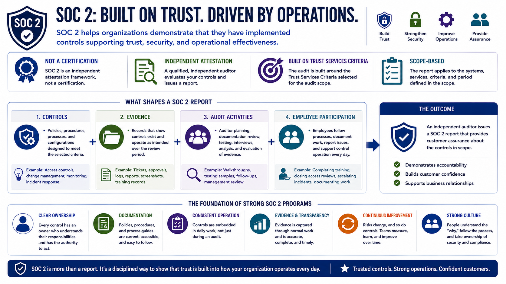

What Is SOC 2?
Course Summary
Connecting to LMS... Progress: in progress
Version 1.0 | Date: 2026-06-16 | Educational overview of SOC 2 concepts, controls, evidence, and trust.

Narration
SOC 2 helps organizations demonstrate that they have implemented controls supporting trust, security, and operational effectiveness.
It is an independent attestation framework, not a certification, and it is built around the Trust Services Criteria selected for the audit scope.
Controls, evidence, audit activities, and employee participation all shape the report and the customer assurance it can provide.
Strong SOC 2 programs treat compliance as part of normal operations, supported by clear ownership, documentation, and continuous improvement.